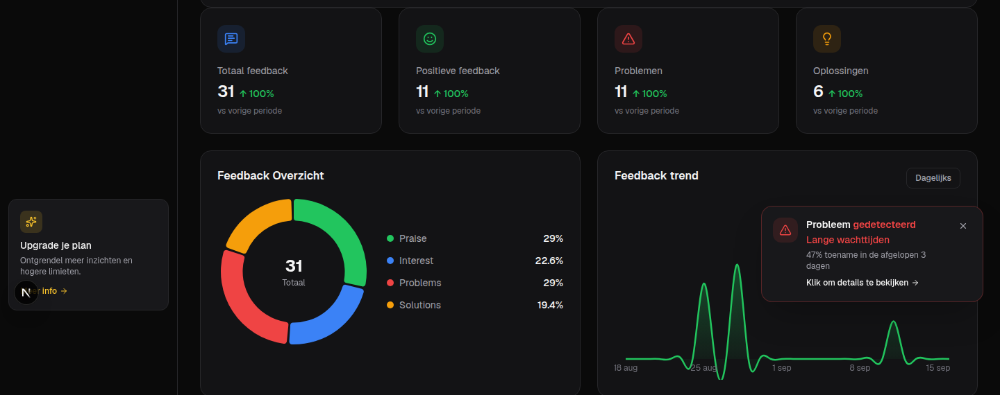
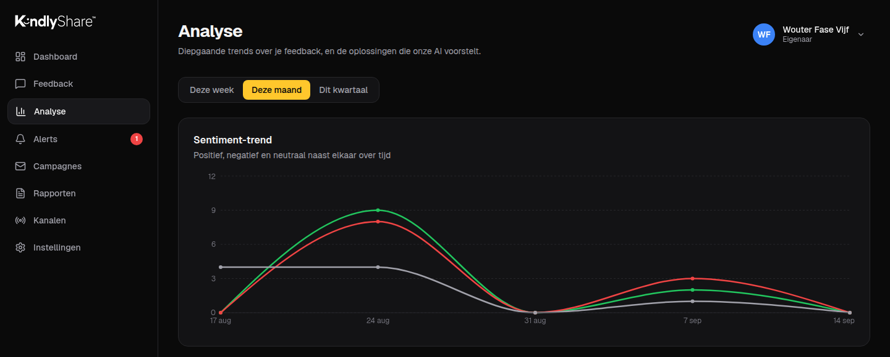
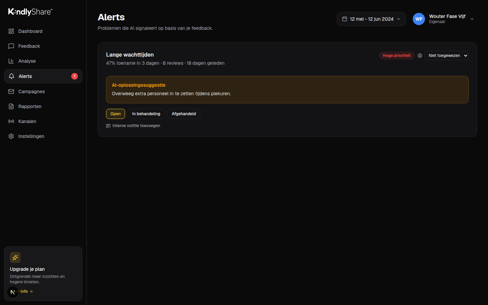
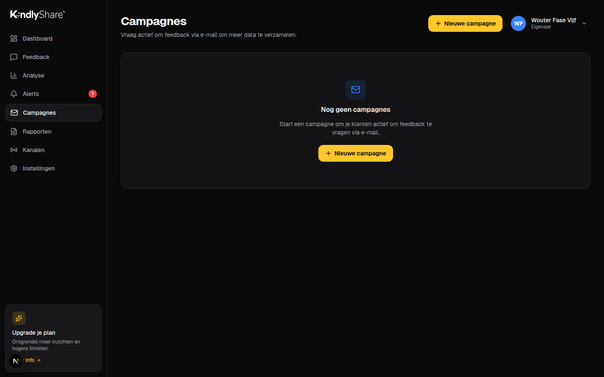
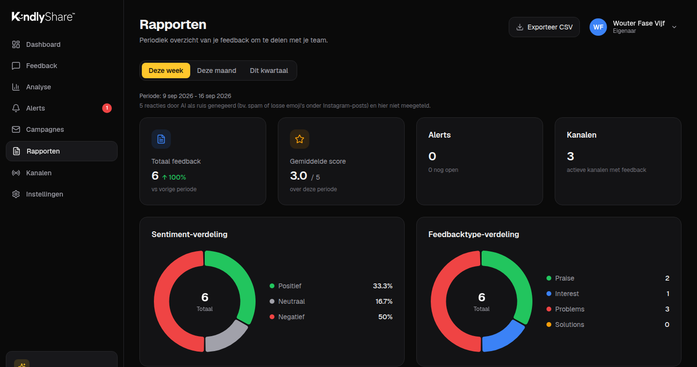
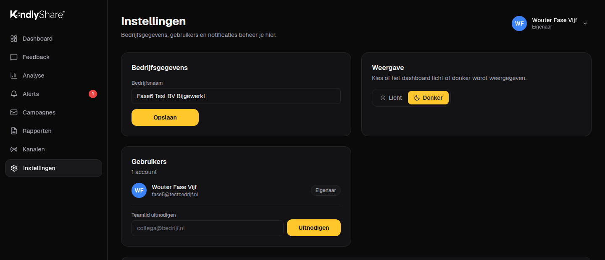

Van feedback verzamelen tot problemen oplossen.
Elk onderdeel van KindlyShare™ is op elkaar afgestemd: koppel je kanalen, verzamel feedback, ontdek patronen en onderneem actie — zonder ergens anders te hoeven kijken.
Eén centraal overzicht van al je feedback.
Zie in één oogopslag hoeveel reacties er binnenkomen, hoe positief klanten over je zijn, en of ergens een probleem opduikt dat aandacht nodig heeft. Geen losse tabbladen meer per platform — alles staat bij elkaar, bijgewerkt zodra er nieuwe feedback binnenkomt.

Alle reviews, één inbox.
Reviews en reacties van Google, Trustpilot, App Store, Instagram, Facebook en TikTok komen samen op één plek. Zoek op trefwoord, filter op sentiment of categorie, en reageer direct vanuit KindlyShare — zonder te wisselen tussen platforms.
Bekijk de volledige inbox
Ontdek patronen die je anders zou missen.
Zie welke onderwerpen de laatste tijd verbeteren of juist verslechteren, hoe je kanalen onderling scoren, en hoe sterrenscores zich verdelen. Bij een terugkerend probleem stelt onze AI meteen een concrete oplossing voor.

Los problemen op vóórdat ze escaleren.
Zodra een onderwerp opvallend vaker in negatieve feedback voorkomt, slaat KindlyShare automatisch alarm — mét een concrete AI-oplossingssuggestie. Wijs een alert toe aan een teamlid en houd de status bij tot het is afgehandeld.

Wacht niet af, vraag actief om feedback.
Upload een klantenlijst, laat onze AI een persoonlijke e-mail opstellen en verzamel feedback die je anders nooit had gezien. Zo bouw je gestaag aan meer reviews én meer inzicht, in plaats van afhankelijk te zijn van toeval.

Kant-en-klare rapportages, elke week.
Een overzicht van je feedback per week, maand of kwartaal — inclusief sentimentverdeling, meest genoemde onderwerpen en openstaande alerts. Exporteer als CSV en deel het met je team, investeerders of management.

Eén keer koppelen, voorgoed verzameld.
Koppel je Google-, Trustpilot-, App Store-, Instagram-, Facebook- en TikTok-account in een paar klikken. Vanaf dat moment verzamelt KindlyShare automatisch alle nieuwe feedback op de achtergrond, zonder dat je nog handmatig elk platform hoeft te controleren.
Google Reviews
Koppel in 2 klikkenTrustpilot
Koppel in 2 klikkenApp Store
Koppel je developer-accountTikTok
AI filtert spam automatischAlles onder controle, in één scherm.
Beheer je bedrijfsgegevens, nodig teamleden uit met de juiste rol, stel meldingen in via e-mail of Slack zodra er een probleem wordt gesignaleerd, en genereer de embed-code voor de feedbackwidget op je eigen website.
